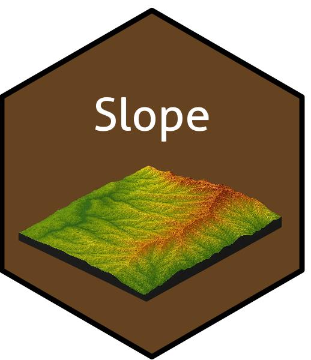

slope: An R Package for Geomorphometric Analysis
slope is an experimental R package providing distinct geomorphometric approaches, commonly unavailable in traditional GIS environments, focused on the reproducibility and replicability of geomorphometric analyses. Additionally, the scope of this project implements classical geomorphometric methods fundamental to the scientific community.
For citation:
Marques Filho, J. da P. (2026). marquesfilhojp/slope: slope: Identify slope patterns and processes (Version v0.3.2) [Computer software]. Zenodo. https://doi.org/10.5281/zenodo.21325742
Dependencies
The following dependencies are required for the proper performance of the R package slope: caret, classInt, ggplot2, httr2, MultiscaleDTM, sf, spatstat, terra and whitebox.
⚙️ Installation by Operating System
Currently, the R package slope v.0.5.1 has been developed solely for Windows operating systems and Linux distributions such as Debian, Ubuntu, and Linux—specifically version 22.04 LTS Jammy Jellyfish.
🪟 Windows
It is recommended to use R version 4.5.x or higher and Rtools 45 or higher to install the R package terra, which is essential for the operation of this package.
R v.4.5.x: https://cran.r-project.org/bin/windows/base/old/4.5.3/
Rtools45: https://cran.r-project.org/bin/windows/Rtools/rtools45/rtools.html 🐧 Linux
On Linux distributions such as Ubuntu 22.04 LTS (Jammy Jellyfish) and other similar systems, it is recommended to initially install the R terra package to ensure the proper functioning of this package, for manipulating vector and raster data with following libraries GDAL (>= 2.2.3), GEOS (>= 3.4.0), PROJ (>= 4.9.3), netcdf (>=4.1.3), sqlite3 and tbb.
sudo add-apt-repository ppa:ubuntugis/ubuntugis-unstable
sudo apt-get update
sudo apt-get install libgdal-dev libgeos-dev libproj-dev libtbb-dev libnetcdf-devThis package was developed in partnership with the Environmental Geomorphology and Soil Degradation Laboratory (LAGESOLOS) and the Remote Sensing and Environmental Studies Space Laboratory (ESPAÇO) at the Federal University of Rio de Janeiro.